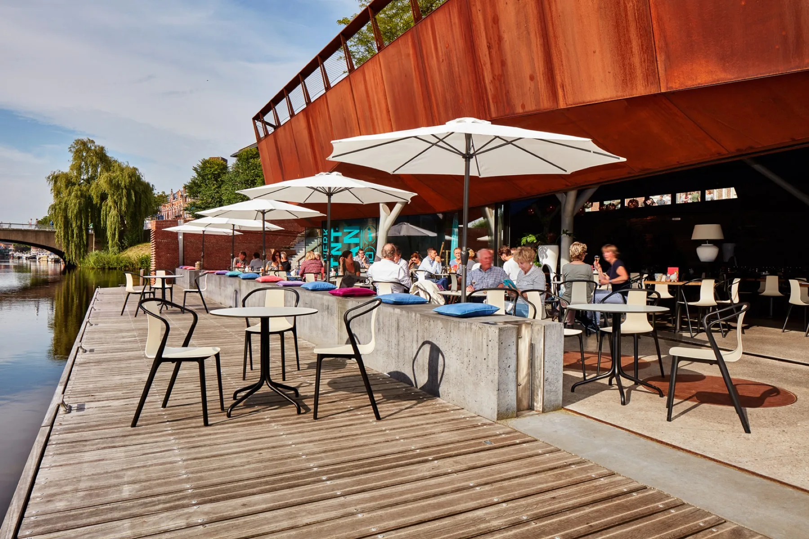
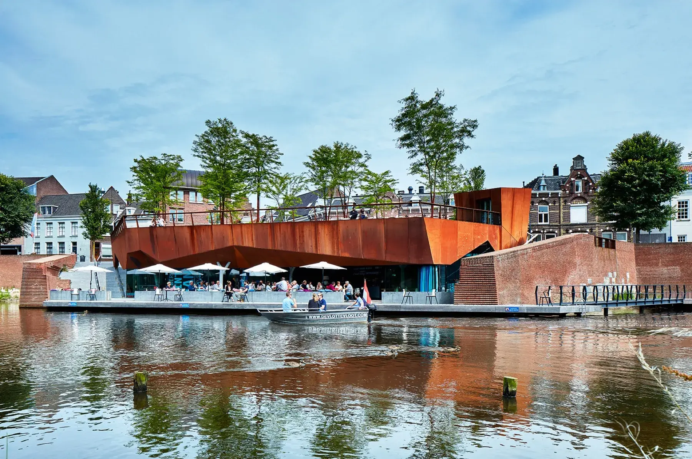
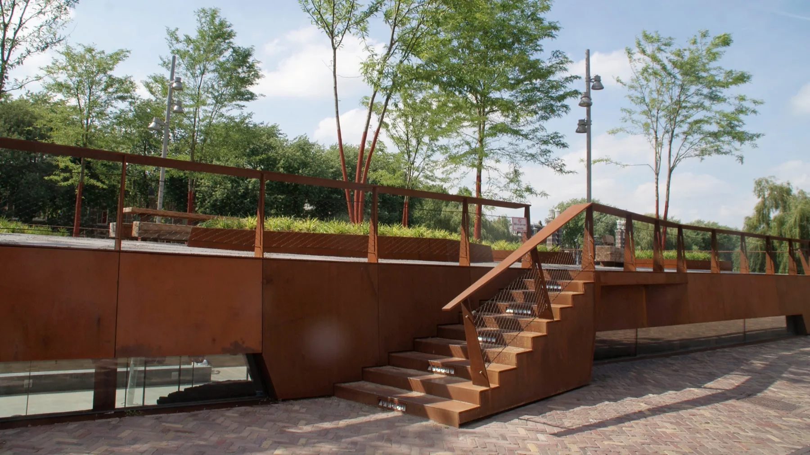
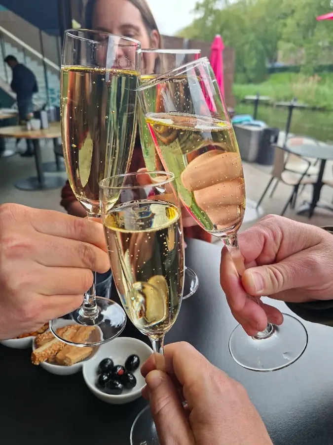
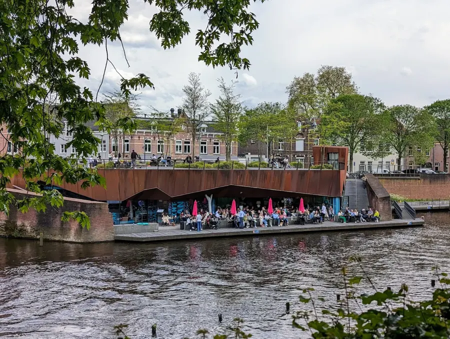
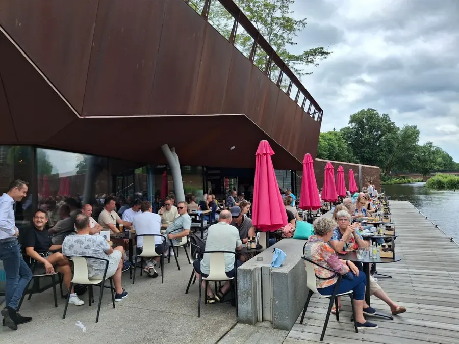
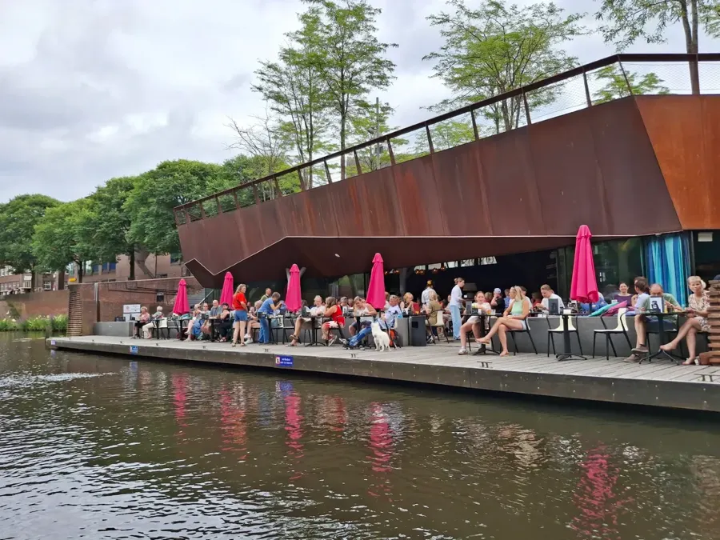
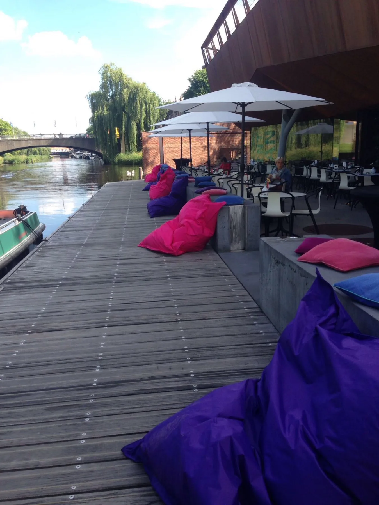

Breakfast
Until 11:30
Bolwerk breakfast, pancakes or avocado mash, with the paper at the reading table.

Brasserie restaurant on Bolwerk Sint-Jan
Until 11:30
Bolwerk breakfast, pancakes or avocado mash, with the paper at the reading table.
11:30 - 16:30
Soups, salads, sandwiches and the Bolwerkburger, best enjoyed on the deck.
All day
Gin and tonics, spritzes and bar snacks while the boats drift by.
From 16:00
From hare satay to sea bass, with hot stone cooking as the specialty.
The tournedos arrives raw on a red-hot lava stone at your table. Each slice cooks exactly the way you like it, while the water ripples beside you.
We had the tournedos, which was delicious and fun because you could prepare it yourself on a hot stone.


Not a terrace next to the canal, but a wooden deck built right over it. Boats moor at the jetty, swans glide past, and the sun stays on it all afternoon.
Bolwerk Sint-Jan is built: a triangular fortification with the new Sint Janspoort gate.
The corten-steel pavilion with its rooftop park rises on the old foundations, designed by Van Roosmalen van Gessel Architecten.
Inside, you dine next to the original medieval city wall, with a park on the roof above your head.


Great place for lunch or pre-dinner drinks, where you can calmly watch the city pass by on boats, bikes and foot. You might be so comfortable that you end up staying for dinner too.

I tried the traditional Bossche Bol here, and it was absolutely delicious. The location is stunning, right on the water, the atmosphere is relaxed, and the young team was super friendly.

We chose this place to celebrate our company's twentieth anniversary. The service was excellent, the food was great, and it has an amazing view over the water, with the medieval wall inside as an extra touch.

We stopped by for drinks on the terrace on a sunny Sunday. Friendly service, good drinks, delicious fries, and a Bossche Bol for my son.

I love how the old city walls are integrated into the modern architecture, with a beautiful view over the canal. Great location and service.



Prefer to be spontaneous? Walk-ins are always welcome, the terrace is walk-in only.